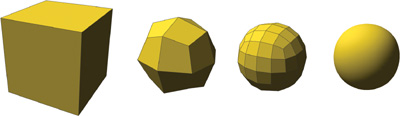
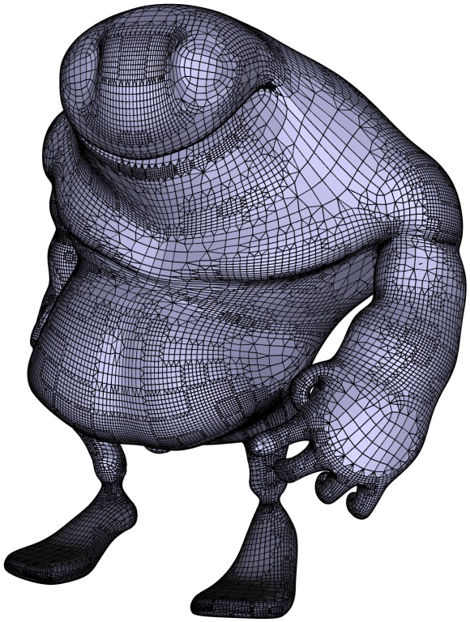
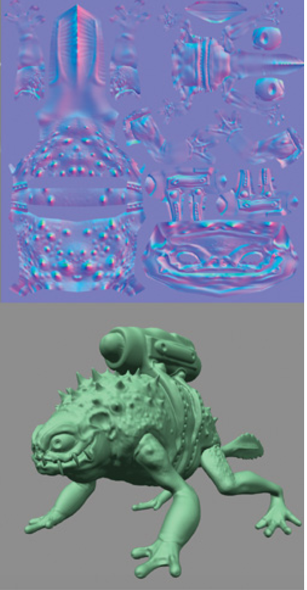

Project Title: Displacement Maps using Dynamic Tessellation
Team Members: Jeff Yu (cs184-ady), Bing Bo (cs184-afd)
Goal: implement Tessellation and Displacement Mapping in order to add stunning surface details
The implementation in our final project would be separated into two parts: Tessellation and Displacement Mapping.
Tessellation:
In Project 2, we have already implemented the subdivision algorithm. However, the issue arose from that is we might subdivide those meshes that do not need to be subdivided. For instance, if certain parts of surfaces have already been smooth enough, keeping subdividing the meshes beneath these parts would only be redundant and slowing our rendering. Therefore, we find the number of subdivisions that is needed for each meshes, which would be our biggest difficulty in this part.
More specifically, we should convert our mesh topology from triangles to quad in order to follow the instructions from [1]. Therefore, we would need to implement Catmull-Clark Subdivision according to certain vertex update rules. Moreover, Adaptive Subdivision can be built based on the surface curvature and the viewpoint to avoid the inefficiency and the artifacts caused by over-tessellated and under-tessellated parts.
Displacement Mapping:
Tessellation is implemented to achieve high performance efficiency-wise, and Displacement Mapping is the key thing that decorates our object with those "stunning surface details". Differing from a texture map, a displacement map contains a scalar value per texel that tells us how much the surface should be displaced to in the direction of its normal. In order to achieve Displacement Mapping, we need to add geometries based on the comparison between each edge's maximum displacement given in the displacement map and the corresponding flatness, and modify our Normal Shading by increasing the geometric details. Note that flatness is defined as the distance from the mesh to the hypothetical surface that the mesh approaches to after an infinite number of subdivision.
What we plan to deliver:
Firstly, we would need to convert our polygonal meshes from triangles to Quad and implement Catmull-Clark Subdivision. More details about the Vertex Update Rules can be found at in the class slides.
|

|
Then, we are to implement Adaptive Tessellation. The number of subdivision to be applied on certain mesh is based on how close it is to the viewpoint and how curve its surface is. The figure below illustrates well how the number of subdivision is selected based on the mesh's viewpoint and curvature.
|

|
Lastly, we need to finish the Displacement Mapping that is used to add geometric complexity to a simple, lightweight model. Displacement maps really change the actual geometry of the surface. We need to compare the the maximum displacement and the flatness threshold and add more geometry if the edge's maximum displacement is greater than the flatness threshold. Moreover, we use normal mapping to take the displacement into account when shading the surface instead of adjusting the vertex normals like bump mapping. Below is a monster frog after implementing displacement mapping, this is what we expect to get after implementation.
|  |
What we hope to deliver:
If everything goes well, we hope to accomplish the the tessellation with a triangle-based subdivision scheme, Loop Subdivision. We decide to solve it by implementing PN-Triangles to achieve Tessellation. As suggested in [2], PN-Triangles method out-performs Walton-Meek Triangles and Gregory Triangles under all situations. We would like to figure out the differences between implementing tessellation with Catmull-Clark Subdivision and Loop Subdivision.
| Week 1 | Catmull-Clark Subdivision |
| Week 2 | Tessellation |
| Week 3 | Displacement Mapping |
| Week 4 | Prepare for presentation and final write-up |
[1] Chapter 7. Adaptive Tessellation of Subdivision Surfaces with Displacement Mapping
[2] Methods for Approximating Loop Subdivision Using Tessellation Enabled GPUs
[3]Exact Evaluation of Limits and Tangents for Non-Polynomial Subdivision Schemes